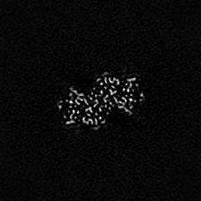

| .OPERATION: | CP FROM MRC | ; Create SPIDER image from MRC file |
| .INPUT FILE NAME OR TEMPLATE (E.G. STK@****): | sav_emd_20041_127.mrc | ; MRC image (input) |
| .SPIDER OUTPUT FILE: | cpfrommrc_img | ; SPIDER image (output) |
| .DATA ORIGIN CORNER (UL/LL): | UL | ; Input has Upper Left data origin |
| OUTPUT IMAGE |
|---|
|  |
| cpfrommrc_img |